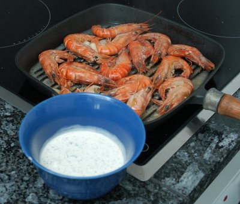

| Hauptgericht für 4 Personen: | |
| 4 | Riesenkrevetten-Spiesse 600-800g |
| 6-8 | Knoblauchzehen |
| Olivenöl | |
| 1 | Zitrone |
| 1 Zweig | Thymian |
| Salz und Pfeffer aus der Mühle |
|
| Kräuter-Dip: | |
| 1 Beutel | frische Kräuter "Salat-Mix" (Petersilie, Dill, Basilikum, Estragon) |
| 100g | Mayonnaise |
| 100g | Creme fraiche |
| 1/2 | Limone |
| Schwarzer Pfeffer aus der Mühle | |
| Meersalz | |
Zubereitungszeit: ca. 25 Minuten, Kochzeit 25 Minuten
Für den Kräuter-Dip die Kräuter waschen und trocknen, die Blätter abzupfen und fein hacken. Unter die Creme fraiche und die Mayonnaise mischen.
Von der Limone etwas Schale in die Sauce raffeln.
Einen Teelöffel Limonensaft auspressen und darunter ziehen.
Mit Salz und Pfeffer abschmecken. Kühl stellen.
Die Knoblauchzehen schälen und zusammen mit dem Thymianzweig in nicht zu heissem Olivenöl weich dämpfen und erkalten lassen.
Die vorbereiteten Krevettenspiesse mit Olivenöl, in dem der Knoblauch gedämpft wurde, bestreichen und zehn Minuten marinieren.
Die Spiesse auf dem Grill oder in der Bratpfanne grillieren oder braten, dabei ab und zu mit Knoblauchöl bestreichen.
Erst nach dem Braten oder Grillen mit Salz und Pfeffer würzen.
Mit Zitronenschnitzen garnieren und dem Kräuter-Dip servieren.
Dazu passen ofenfrisches oder getoastetes Weissbrot, Blattsalat und je nach Gusto gegrillte Zucchetti, Peperoni oder gedämpfte Tomaten.
Migros, Rezeptbroschüre
Da ich keinen Grill habe, habe ich mit erlaubt, die grossen Krevetten in der Grillpfanne zuzubereiten. Die Sauce schmeckt toll. RE, 10.5.2008
@LINKBACK_TAG@ @WAKELOCK@